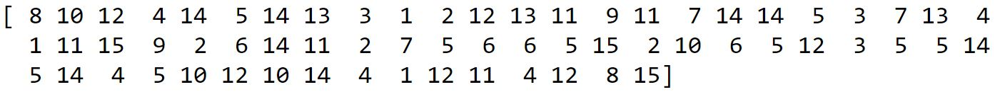

PROJECT 1 - Auto Player Generator
- Work log:
- Day 1: (04/02/2019) Study the Model
- Day 2: (04/03/2019) Changing angle output: 16 classes -> (sine, cosine)
- Day 3: (04/04/2019) Adding random noise to the input
- Day 4: (04/05/2019) Adding some fully connected layer for Angle prediction
- Day 1: (04/02/2019) Study the Model
Dataset:
Input:
- Image:
- FP: 128 x 128 x 3 (floorplan)
- PN: 128 x 64 x 3 (panorama)
- Datasets0:
- N_SAMPLE = 25000
- N_SAMPLE_TEST = 1588
- Datasets1:
- N_SAMPLE = 25016
- N_SAMPLE_TEST = 1572
- Datasets2:
- N_SAMPLE = 16908
- N_SAMPLE_TEST = 896
- Datasets3 and Datasets4:
- N_SAMPLE = 12792
- N_SAMPLE_TEST = 692
- Image:
Output:
- Postion:
- x
- y
- Angle:
- N_ANGLE = 16
- d_{angle} = \frac{2.0 * math.pi}{N\_ANGLE}
Data generator:
- dump_size = 64
Functions:
- Zenkei Auto Player
- Model
- ResidualBlock(nn.Module)
- input
- in_channels
- out_channels
- stride = 1
- p = 0.0
- forward
- residual
- bn1
- nn.BatchNorm2d(in_channels)
- relu1
- F.relu(bn1)
- conv1
- nn.Conv2d(in_channels, out_channels, kernel_size=3, stride=stride, padding=1, bias=False)
- bn2
- nn.BatchNorm2d(out_channels)
- relu2
- F.relu(bn2)
- dropout
- F.dropout(relu, p=self.drop_rate, training=self.training)
- conv2
- nn.Conv2d(out_channels, out_channels, kernel_size=3, stride=stride, padding=1, bias=False)
- return
- residual + conv2
- _ConvLayer(nn.Module)
- input
- ch_in
- ch_out
- stride = 2
- p = 0.0
- forward
- conv
- nn.Conv2d(ch_in, ch_out, kernel_size=3, padding=1, stride=1, bias=False)
- bn
- nn.BatchNorm2d(ch_out)
- relu
- F.relu(bn)
- maxpool
- nn.MaxPool2d(kernel_size=3, padding=1, stride=stride)
- dropout
- F.dropout(maxpool, p=self.drop_rate, training=self.training)
- return
- dropout
- PlayerNet(nn.Module)
- input
- ch_fp = 0
- number of channels to embed for floorplan images
- default '0' --- no embedding
- ch_pn = 0
- number of channels to embed for panorama images
- default '0' --- no embedding
- n_xy = 4
- number of ResNet units in each ResNet part for (x, y)
- n_angle = 4
- number of RetNet units in each ResNet part for (angle)
- dropout_xy = 0.1
- dropout probability for (x, y)
- dropout_angle = 0.1
- dropout probability for (angle)
- forward
- fp
- pn
- cat
- return
- xy_fc, angle_view
- Loss and Accuracy
- helper_functions
- err_mean_distance_xy
- input
- y_pred
- y_true
- return
- ???
- usage
- sparse_crossentropy_with_logits
- input
- labels
- logits
- return
- ???
- usage
- acc_xy
- input
- y_pred
- y_true
- alpha = 0.1
- return
- ???
- usage
- acc
- my_acc_xy
- input
- outputs
- labels
- return
- usage
- my_acc_angle
- input
- outputs
- labels
- return
- usage
- loss
- my_loss_xy
- input
- outputs
- labels
- return
- usage
- my_loss_angle
- input
- outputs
- labels
- return
- usage
- my_loss
- input
- outputs
- labels
- return
- usage
- functions
- norm_angle
- input
- theta
- usage
- rotate_pano
- input
- pano
- dyaw
- usage
- distort_batch
- input
- xs
- ys
- dist_pn = True
- dist_fp = True
- usage
- shuffle_batch
- input
- xs
- ys
- idx
- usage
- xs_to_fp
- input
- xs
- output_format = 'numpy'
- usage
- xs_to_pn
- input
- xs
- output_format = 'numpy'
- usage
- ys_to_xy
- input
- ys
- output_format = 'numpy'
- usage
- ys_to_angle
- input
- ys
- output_format = 'numpy'
- usage
- data_generator
- input
- batch_size
- dump_size
- dump_bodyname
- dump_list
- shuffle = False
- dist_pn = False
- dist_fp = False
- output_format = 'numpy'
- return
- (xs_fp, xs_pn), (ys_xy, ys_angle)
- xs_fp: floorplan images
- 'numpy' --- (-1, FP_HEIGHT, FP_WIDTH, 3)
- 'pytorch' --- (-1, 3, FP_HEIGHT, FP_WIDTH)
- xs_pn: panorama images
- 'numpy' --- (-1, PN_HEIGHT, PN_WIDTH, 3)
- 'pytorch' --- (-1, 3, PN_HEIGHT, PN_WIDTH)
- ys_xy: position of each panorama on the floorplan (x, y)
- 'numpy' --- (-1, 2)
- 'pytorch' --- (-1, 2)
- ys_angle: discretized angle classes for each panorama
- 'numpy' --- (-1, N_ANGLE)
- 'pytorch' --- (-1, N_ANGLE)
- usage
Model:
- Show model using TensorboardX:
- Prereqire: pytorch, tensorflow
- Install :
pip install tensorboardX - Create graph:
python zenkei_auto_player.py
zenkei_auto_player.py is in this link
- View graph:
tensorboard --logdir=runs --host localhost --port 8088
Then open browser and type localhost:8088
- Model graph:
- Show model using TensorboardX:
- Day 2: (04/03/2019) Change angle output from categorical value to (sine, cosine) value
Take a look at angle output data:
- Angle stored in dump file:
In dataset, an angle are stored as an one-hot vector size 16.
ys_angle shape (?, 16)
(batch_size = 64)
- Angle generated by data generator
Afer using
ys_to_angle()function, a scalar [0, 15] is used to represent an angle.angle shape (?)
(batch_size = 64)
- Angle stored in dump file:
Change angle outut data from 1 of 16 classes to (sine, cosine) values:
- Calculate radian angle:
With
d_angle = 2.0 * math.pi / float(N_ANGLE)We have the radian value of a angle is:
r_angle = angle * d_anglewith
angleis the output ofys_to_angle()radian angle shape (?)
- Calculate sine and cosine values:
Calculate sine value of the angle using
sin = np.sin(r_angle)sine shape (?)
Calculate cosine value of the angle using
cosin = np.cosin(r_angle)cosine shape (?)
- Create angle output:
Concatenate sine and cosine values to have an angle_out
angle_out = np.concatenate((np.expand_dims(sin, axis=1),np.expand_dims(cos, axis=1)), axis=1)angle_out shape (?,2) (same as (x, y))
- Calculate radian angle:
Change the model to output (sine, cosine) values for angles:
- Change output layer in the PlayerNet model:
angle_conv_2layer:Old code:
self.angle_conv_2 = _ConvLayer(256, N_ANGLE, 2, p=dropout_angle)
New code:
self.angle_conv_2 = _ConvLayer(256, 256, 2, p=dropout_angle)angle_res_3layer:Old code:
self.angle_res_3 = self._res_block(N_ANGLE, N_ANGLE, n_angle, p=dropout_angle)
New code:
self.angle_res_3 = self._res_block(256, 256, n_angle, p=dropout_angle)- Adding a FC layer after
angle_avgpoollayer:self.angle_fc = nn.Linear(256, 2)
Because we have 2 output values: (sine, cosine), so output dimension ofLinearlayer is 2In
forward():
Adding this code:x_angle = self.angle_fc(x_angle)
- Change the accuracy calculation for angle in
my_acc_anglefucntionOld code:
_, preds = torch.max(out_angle.data, 1)
acc_angle = (preds == ys_angle.data.view_as(preds)).float().sum() / ys_angle.size()[0]
New code:
acc_angle = acc_xy(out_angle, ys_angle) - Change the loss calculation for angle in
my_loss_angleandmy_lossfunction- in
my_loss_angleandmy_lossOld code:
loss_angle = torch.sum(sparse_crossentropy_with_logits(ys_angle, out_angle))
New code:
loss_angle = err_mean_distance_xy(out_angle, ys_angle) - in
my_lossBecause (x,y) and (sine, cosine) now in same scale so try using no weight for losses
Old code:
loss = loss_xy + 1.0e-6 * loss_angle
New code:
loss = loss_xy + loss_angle
- in
- Change output layer in the PlayerNet model:
First Result:
x,y accuracy: descrease
angle accuracy: not change much
Good things: angle val_loss not increase during trainingAdd
F.sigmoid()andF.tanh()to (x,y) and (sine,cosine) output(x,y) output -> in range [0,1]
(sine, cosine) output -> range [-1,1]
Result:
Not much change
Good things: no sometime extream increase in angle val_loss
- In calculating loss, reuse the weight: multiply
angle_losswith 1e-3Good thing: x,y accuracy recovers to ~90%
- Day 3: (04/04/2019) Adding random noise to the input
- Adding random noise to an image:
Code to add Gaussian noise to an image
new_xs = xs[0][2] + torch.zeros(xs[0][2].shape).data.normal_(0, 0.1)
Original image Noise added image 
- Adding random noise to input images:
In
data_generatorfunction:
Add argument:sigmafor the standard deviation value of Gaussian noise
if sigma > 0 and output_format == 'torch':
xs_fp = xs_fp + torch.zeros(xs_fp.shape).data.normal_(0, sigma)
xs_pn = xs_pn + torch.zeros(xs_pn.shape).data.normal_(0, sigma) - Result:
It seem that angle val_loss still can be reduce
- Run for 100 more epochs
Angle accuracy is terrible!
xy accuracy looks good!
- Adding random noise to an image:
- Day 4: (04/05/2019) Adding some fully connected layers for Angle prediction
- Adding some fully connected layer after
angle_avgpoollayerself.angle_fc1 = nn.Linear(256, 128)
self.angle_fc2 = nn.Linear(128, 64)
self.angle_fc3 = nn.Linear(64, 32)
self.angle_fc4 = nn.Linear(32, 2)
x_angle = self.angle_fc1(x_angle)
x_angle = self.angle_fc2(x_angle)
x_angle = self.angle_fc3(x_angle)
x_angle = self.angle_fc4(x_angle)
Result:
- Adding relu and dropout layer after each fully connected layer
x_angle = self.angle_fc1(x_angle)
x = F.relu(x)
if self.dropout_angle > 0:
x = F.dropout(x, p=self.dropout_angle, training=self.training)
x_angle = self.angle_fc2(x_angle)
x = F.relu(x)
if self.dropout_angle > 0:
x = F.dropout(x, p=self.dropout_angle, training=self.training)
x_angle = self.angle_fc3(x_angle)
x = F.relu(x)
if self.dropout_angle > 0:
x = F.dropout(x, p=self.dropout_angle, training=self.training)
x_angle = self.angle_fc4(x_angle)
Result:
- Adding some fully connected layer after
- Day 4: (04/08/2019) Check some ideas
- Day 4: (04/09/2019) Checking the original data
- Dataset information file:
dataset = joblib.load('../Data/ZENKEI/players.20170719/166/dataset-all_new.dump')len(dataset)= 26588 = 6647*4 = (166, 166_rot090, 166_rot180, 166_rot_270)1 row:
(
b'Data/ZENKEI/players.20170719/166/55671/273249(108\xe3\x83\xbb203).jpg',
b'Data/ZENKEI/players.20170719/166/55671/273260(\xe3\x83\x88\xe3\x82\xa4\xe3\x83\xac).jpg',
0.3908532,
0.3797202,
-2.6212893071795866,
b'Data/ZENKEI/players.20170719/166/55671/273249.py2dump',
b'Data/ZENKEI/players.20170719/166/55671/273260.py2dump'
)- 1st row:
b'Data/ZENKEI/players.20170719/166/55671/273249(108\xe3\x83\xbb203).jpg'
\xe3\x80\xbb 〻
- 2st row:
b'Data/ZENKEI/players.20170719/166/55671/273260(\xe3\x83\x88\xe3\x82\xa4\xe3\x83\xac).jpg'
\xe3\x83\x88 ト
\xe3\x82\xa4 イ
\xe3\x83\xac レ
- 3rd row:
0.3908532x in [0, 1]: image_width (n_col)
img.shape[1]*0.3908532x - left -> right - 4rd row:
0.3797202y in [0, 1]: image_height (n_row)
img.shape[0]*0.3797202y - top -> bottom - 5th row:
-2.6212893071795866angle in [-\pi, \pi]:
-2.6212893071795866(clockwise) bottom: -\pi --> top: 0 --> bottom: \pi - 6th and 7th row:
dump_img0 = joblib.load(b'../Data/ZENKEI/players.20170719/166/55671/273249.py2dump')
dump_img0.shape(25088,) 25088 = 2^9*7^2 ??????????
dump_img1 = joblib.load(b'../Data/ZENKEI/players.20170719/166/55671/273260.py2dump')
dump_img1.shape(25088,) 25088 = 2^9*7^2 ??????????
- 1st row:
- Distribution of x, y, angle of samples in 166 folder:
- Distribution of x, y, angle in all the dataset
Because images are rotated 90, 180, and 270 degree --> x, y distribution are the same

- Dataset information file:
- Day 4: (04/10/2019) Generate angle0 data and do regression
- Generate data:
Using LANCZOS algorithm for image down-sizing instead of default NEAREST
Some result of deferent resampling filter:
PIL.Image.NEAREST
PIL.Image.BILINEAR
PIL.Image.BICUBIC
PIL.Image.LANCZOS
- Regession:
- Modify the
distortfunction for regession anlge - Result:
- 200 epochs:
- No Distort:
- 200 epochs:
- Modify the
- Generate data: